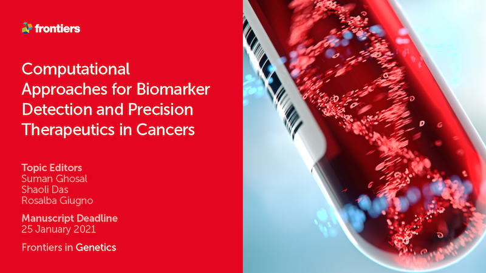
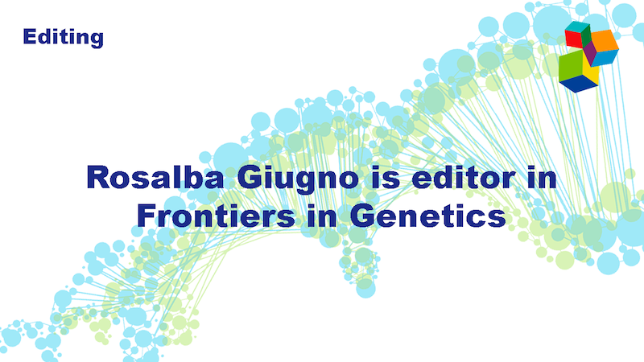
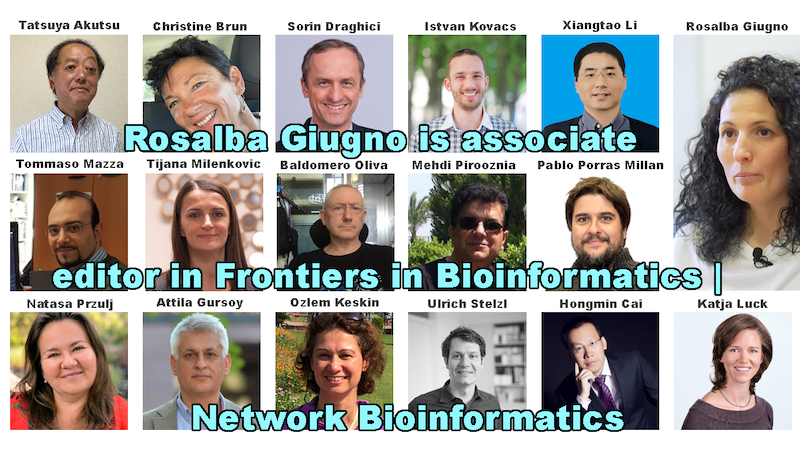
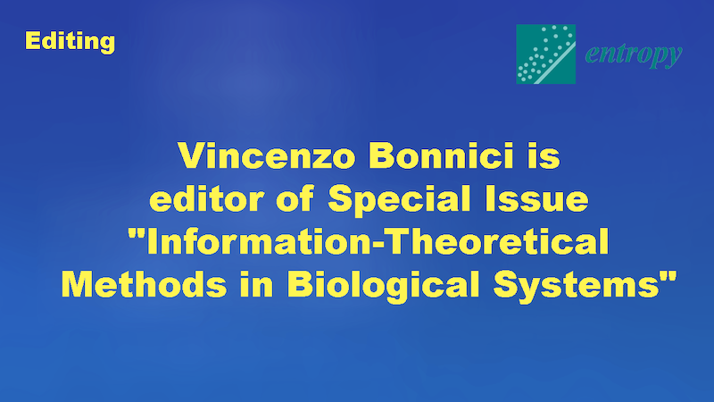
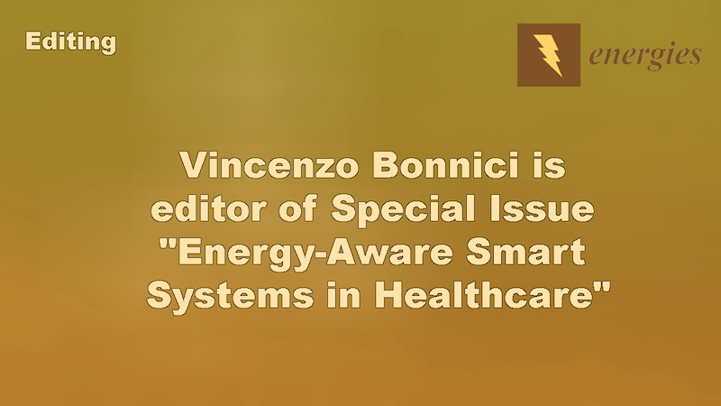
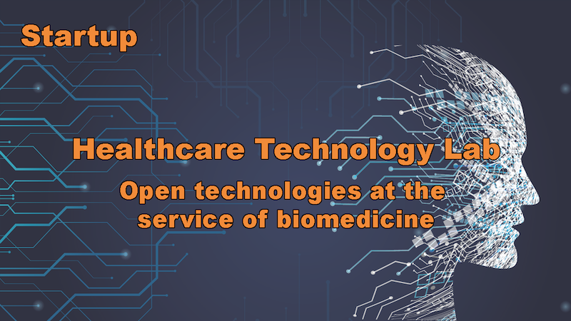

Projects

TUBE
There is an urgent need to understand the interplay of pollutants with
adverse effects in the brain, in order to steer political decision making
for efficient reduction of air pollutants. This could, in the long run,
reduce the economic burden caused by diseases associated with them. To
address this unmet need, the TUBE-project unites interdisciplinary expertise
to study these adverse effects of extremely fine particles (UFP’s) in the
human lung and brain. Leaning on this interdisciplinary approach and state
of the art research methodologies, TUBE will aim to discover the harmful
components of air pollution and identify biomarkers for early detection
of brain disease related to air pollution. This could improve brain health,
reduce the prevalence of brain diseases, provide significant economical
savings, and provide data that will be used to support planning future
traffic policy across the EU. Read more.

ADAIR
ADAIR applies a precision medicine approach to stratify individuals to
subgroups for risk estimation and future AD prevention, ultimately aiming
to target air pollution induced effects in those individualsthat can most
benefit from them. The project investigates the novel, ambitious hypothesis
that the pollutant exposure environment of an individual alters cellular
mechanisms and functions, resulting in the expression of measurable biomarkers.
By identifying biomarkers, the individuals with increased AD risk can be
stratified prior to the disease onset and preventive measures can be
targeted to the specific at-risk populations in order to be most effective.
The main objectives are to:
The main objectives are to:
- Discover biomarkers of air pollutant effects.
- Correlate biomarkers to AD risk to identify sub-groups of individuals with an increased susceptibility for air pollutant effects.
- Better understand how the exposure environment is linked with complex disease mechanisms underlying AD, thus paving the way for future therapeutic approaches.

Neuro-innovation PhD programme
The University of Eastern Finland has received EU funding to recruit
14 doctoral students into a four-year multidisciplinary Neuro-Innovation
PhD programme, which will be implemented on the Kuopio campus. The University
of Verona and Infomics research group are partners of the neuro-innovation PhD programme.
The Marie Skłodowska-Curie Cofund grant of 1,5 million euros will
increase the scope and quality of multidisciplinary research in the
UEF Neuroscience Research Community (NEURO). Thereby, it will also
generate a strong positive impact on health innovation in Finland and beyond.
The recruitment of the international PhD students will start in June 2021.
Read more.
More projects available here
Workshops & conferences

AIRDEGEN 2021
Despite decades of neurodegenerative disease (ND) research, the
real molecular pathophysiology of the disease is still poorly
understood, and treatments remain inadequate. Remarkably little attention
is paid to the involvement of environmental factors, which are known
from epidemiological studies to strongly impact ND development. Air
pollution, a massive public health issue known to pose a major threat
to human health, is an important, ever-increasing global concern. A
growing body of evidence from epidemiological and controlled animal
studies shows that exposure to air pollutants also impairs the brain.
Furthermore, living in highly polluted areas is associated with
exacerbated cognitive dysfunction and ND. Many questions remain
unanswered as mechanistic information on air pollutant effects on
the brain is scarce. Importantly, biomarkers for air pollution and
ND risk prediction do not currently exist, thus hindering the
identification and stratification of individuals at risk for harmful
air pollution effects.
This workshop aims to investigate the novel, ambitious hypothesis that the pollutant exposure environment of an individual alters cellular mechanisms and functions, resulting in the expression of measurable biomarkers. By identifying biomarkers, the individuals with increased ND risk can be stratified prior to the disease onset and preventive measures can be targeted to the specific at-risk populations in order to be most effective. Read more.
This workshop aims to investigate the novel, ambitious hypothesis that the pollutant exposure environment of an individual alters cellular mechanisms and functions, resulting in the expression of measurable biomarkers. By identifying biomarkers, the individuals with increased ND risk can be stratified prior to the disease onset and preventive measures can be targeted to the specific at-risk populations in order to be most effective. Read more.

MODIMO 2021
Multi-omics analysis aims at extracting previously uncovered biological
knowledge by integrating information across multiple single-omic sources.
Past approaches have focused on the simultaneous analysis of a small
number of omic data sets. Current challenges face the problem of integrating
multiple omic sources into a unified complex model, or of combining
already available tools for two-by-two omics analyses and merging their
outcomes. By doing so and leveraging integrated system-level knowledge,
multi-omic approaches ought to enable the development of better qualitative
and quantitative models for descriptive and predictive analyses. To
move this area forward, new statistical and algorithmic frameworks are
needed, for example for generalizing classical graph theory results to
heterogeneous networks, and applying them to diverse problems such as
drug repurposing or understanding the immune response to infections. Thus,
in short, this workshop aims at investigating novel methodologies for
providing crucial insights into multi-omics data management, integration,
and analysis in order to enable biological discoveries.
Read more.

ICHI 2021
Imaging genetics is an emerging longitudinal research field bridging
genetic insights to complex neurological diseases, exploiting quantitative
brain imaging phenotypes. Imaging genetics primarly focus on identifying
and characterizing how genic expression and genomic variation affect
neuroanatomical and neurophysiological traits, by exploiting brain images
information. Until now, have been proposed several imaging genetics methods
to investigate and improve our knowledge on different complex diseases, such
as Alzheimer's disease, but only few works focused on Parkinson's Disease
(PD). Using PD as study case, our lab members Guglielmo Cerri, Rosalba Giugno
and Manuel Tognon will showcase a tutorial on imaging genetics during ICHI 2021,
guiding the attendents through the different steps of the analysis. Moreover,
they will also present an innovative multi-view imaging genetics workflow,
which exploits the advantages of existing methods to analyze heterogenous data,
such as genotyping, transcriptomic, and neuromorphological and functional brain
images. During the tuorial will be presented the main aspects of imaging
genetics analyses, moving from classical quality control to more techinical steps
of the proposed method, such as GWAS, differential expression analysis and
functional annotation. The talk will take place on August 11th 2021 during ICHI 2021
(held online). Read more.
Editing

Biomarker detection in Cancer
Rosalba Giugno is editor for the Research Topic "Computational Approaches for Biomarker
Detection and Precision Therapeutics in Cancers" of Frontiers.
Research Topic aims to explore recent advances in computational
techniques used to harness large-scale cancer genomic and clinical data
for biomarker detection or precision therapeutic strategies. At the
same time, our goal is keeping the focus on clinical relevance and
attempting to bridge the gap between computational and clinical research.
Computational approaches used for biomarker detection, therapeutic
response prediction, drug repurposing, and identifying effective drug
combination therapies will be discussed within this topic. Particularly,
detection of cancer patients with aggressive vs non-aggressive phenotypes,
or patients who may benefit from certain targeted therapies or immunotherapies,
using molecular markers will be of interest.
Read more.

Frontiers in genetics
Rosalba Giugno is editor in Frontiers in Genetics and she has
received the Frontiers in Genetics 2021 Outstanding Associate
Editor Award–Specialty Section Computational Genomics.
Frontiers in Genetics publishes rigorously peer-reviewed research on genes
and genomes relating to all the domains of life, from humans to plants to
livestock and other model organisms. Led by an outstanding Editorial Board
of the world’s leading experts, this multidisciplinary, open-access journal
is at the forefront of communicating cutting-edge research to researchers,
academics, clinicians, policy makers and the public. The study of inheritance
and the impact of the genome on various biological processes is well
documented. However, the majority of discoveries are still to come.
A new era is seeing major developments in the function and variability
of the genome, the use of genetic and genomic tools and the analysis
of the genetic basis of various biological phenomena.
Read more.

Frontiers in Bioinformatics | Network Bioinformatics
Rosalba Giugno is associate editor in Frontiers in Bioinformatics | Network in Bioinformatics.
Modern molecular and cell biology no longer focus on single macromolecules
but now look into complexes, pathways or even entire organism interactomes.
The emerging field of network biology is now mainly centred on unravelling
these relationships and developing novel methodologies to extract the
information that they contain. A deeper knowledge of the global topology
of interactome networks, and how they change in response to insults (i.e.
disease states) will have important bearings in many scientific areas,
from evolutionary biology to biomedical research.
Read more.
Elsevier | Information Systems
Rosalba Giugno is Bioinformatics editor in Elsevier Information Systems Journal.
Information systems are the software and hardware systems that support
data-intensive applications. The journal Information Systems publishes
articles concerning the design and implementation of languages, data models,
process models, algorithms, software and hardware for information systems.
Subject areas include data management issues as presented in the principal
international database conferences (e.g., ACM SIGMOD/PODS, VLDB, ICDE and
ICDT/EDBT) as well as data-related issues from the fields of data mining/machine
learning, information retrieval coordinated with structured data, internet and
cloud data management, business process management, web semantics, visual and
audio information systems, scientific computing, and data science.
Read more.

Special Issue "Information-Theoretical Methods in Biological Systems"
Vincenzo Bonnici is editor for the Special Issue "Information-Theoretical
Methods in Biological Systems". If life developed when biopolymers emerged to
efficiently represent, elaborate upon, and transmit information, we
cannot have a deep understanding of life without an application of
information theory. Investigations from this perspective, in the
general setting of the functional and evolutionary nature of living systems,
are welcome in this Special Issue on Information-Theoretical Methods in Biological Systems.
Read more.

Special Issue "Energy-Aware Smart Systems in Healthcare"
Vincenzo Bonnici is editor for the Special Issue
"Energy-Aware Smart Systems in Healthcare".
Energy-aware systems in health automation are emerging as a new and inter-disciplinary
research field. We are witnessing a rapid development of advanced application
(by using information, communications, automation, and networking technologies)
to realize smart control systems in several smart systems regarding healthcare.
Smart systems are critical in driving innovations in the field of medical technology,
as they provide the basis for information-based health maintenance, and for
guaranteeing an efficient management of medical data and information processes
(i.e., big data management in smart systems and smart networks). Moreover, the
integration of low-power micro-sensors and micro-actuators will provide a technological
healthcare for better treatment and caretaking of patients in the hospital and at home
Read more.
Special Issue "Smart Systems for Healthcare"
Vincenzo Bonnici is editor for the Special Issue "Smart Systems for Healthcare".
Health automation systems are emerging as a new and interdisciplinary research field,
in two different ways: medical smart assistance and the use of biomedical and/or
bioinformatics approaches. We are witnessing a rapid development of advanced applications
(by using information, communications, automation, and networking technologies) to
realize smart and autonomous control systems in several systems regarding healthcare.
Smart systems are critical in driving innovations in the field of medical technology,
as they provide the basis for information-based health maintenance, and guarantee an
efficient management of medical data and information processes (i.e., big data management
in smart systems and smart networks).
Read more.
Startup

HTLab - Healthcare Technology Lab
HTLab (Healthcare Technology Lab) is an innovative startup founded
on November 6, 2019, owned by vEyes (virtual Eyes) - ONLUS. Despite
his young age, thanks to the skills, the laboratories, the infrastructures
and the network with the clinical and technological realities that revolve
around vEyes, HTLab has already been among the winners of the third open
call launched by the FLAME project (H2020, grant agreement no. 731677).
Read more.